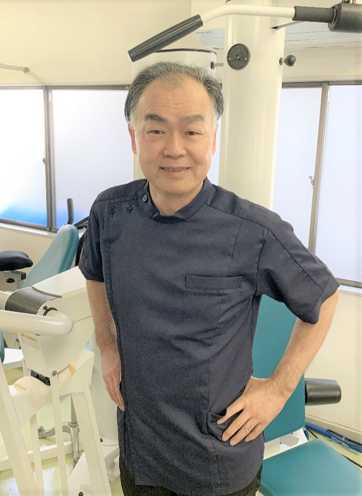
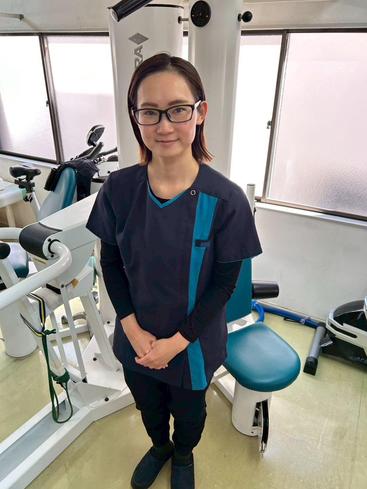
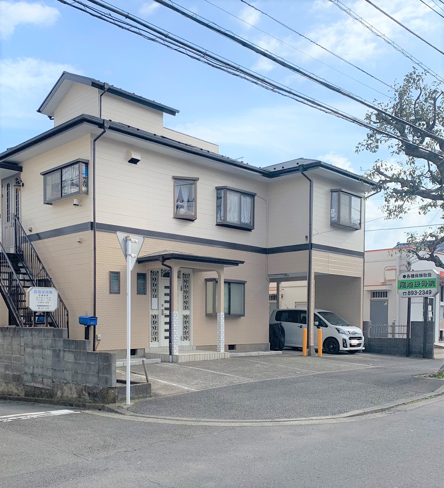
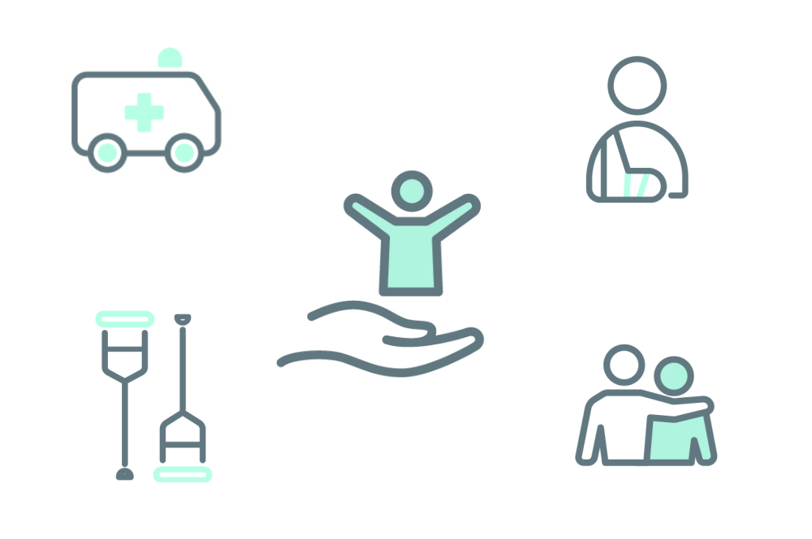
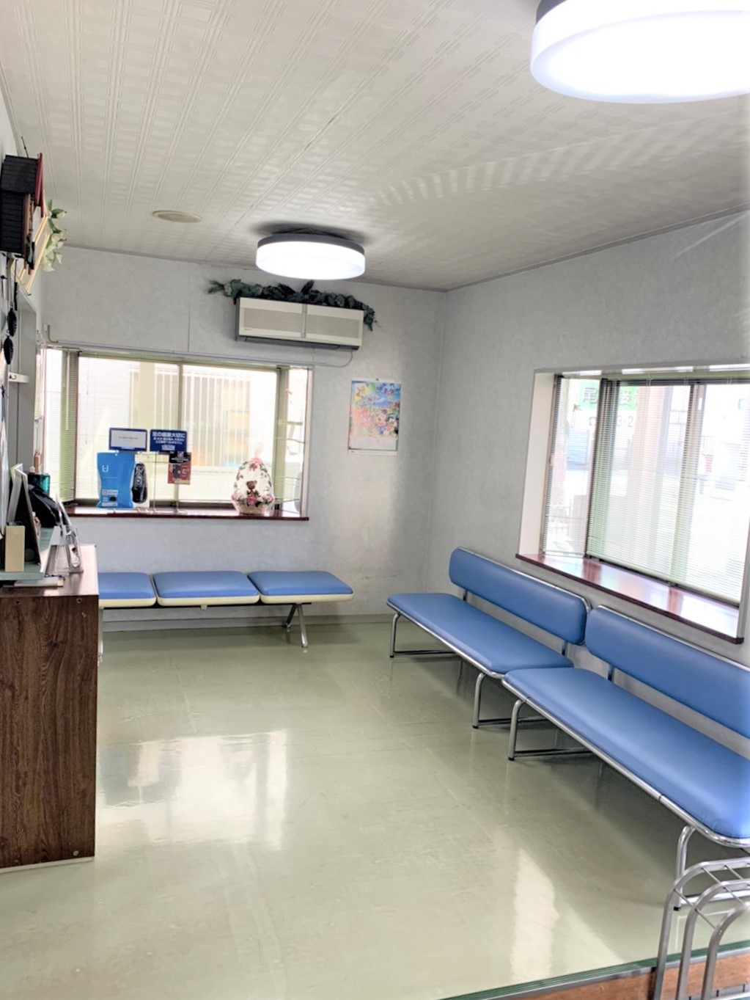
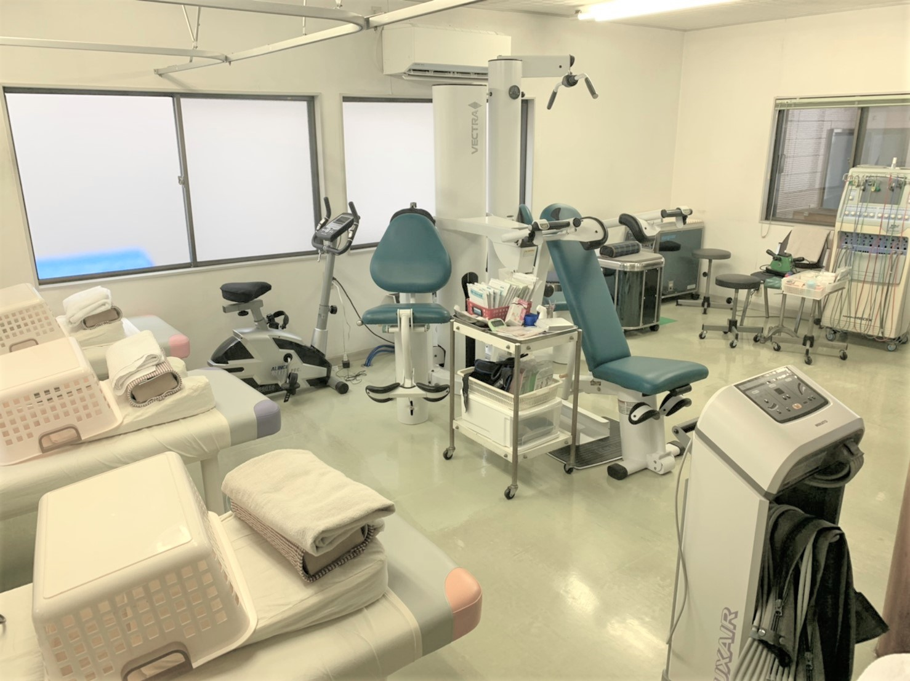
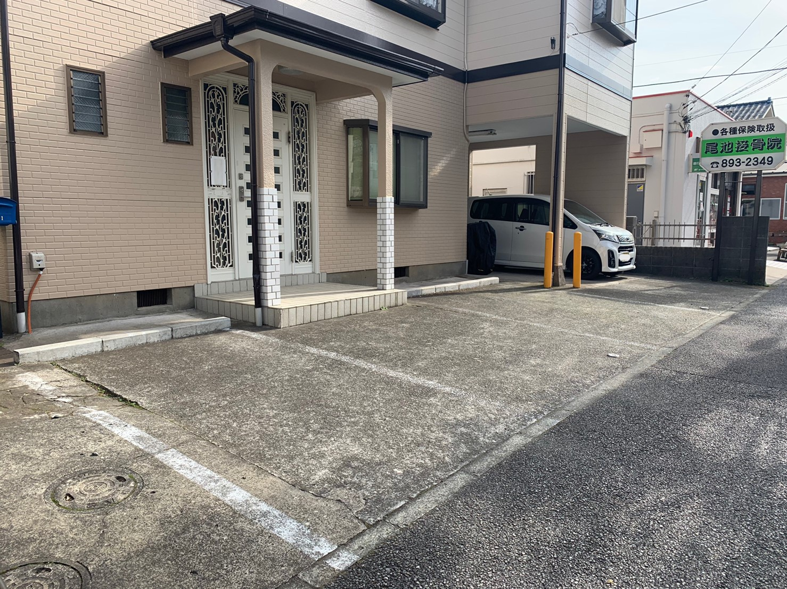

ご 挨 拶
院 長

現在地に開院し、周辺医院の先生方のご指導を頂きながら、地域医療の発展に患者の皆様と共に歩んだ45年間でした。昨今、地域内の住居建替に伴う住民の皆様の変革が見受けられます。時として時代の変化も感じられ私たち医療人もこれらに対応すべき新しい医療情報を具体的に提供出来ます様、努めて参ります。
院 長 尾 池 正 行
副 院 長

平成26年に柔道整復師国家資格を取得し、治療家として施術を始め、トレーニング指導や、ボディーメンテナンスケア等、幅広く対応しています。スポーツは、バトントワーリング・クラシックバレエ・ジャズダンスの経験があり、芸術スポーツの知識は豊富です。また二児の母であり、子育て奮闘中。新たにベビータッチケア(ベビーマッサージ)教室と産後ボディーメンテナンスケアを開始いたしました。詳しくは、産後ケアのページをご覧ください。 当院を選んで下さった方々に、ひとつでも”良い想い“をして頂ける様な内容をお届けしたいと思います。
【資格】
認定機能訓練指導員
ダイエット検定１・２級取得[プロフェッショナル・生活アドバイザー]
ベビースマイルタッチセラピスト・ベビースマイルタッチセラピーインストラクター 取得
副 院 長 小 串 麗 香
当 院 に つ い て
尾 池 接 骨 院 に よ う こそ

当院は、横浜市栄区に1980年に開院した接骨院です。
閑静な住宅街の中で地域の皆さまとともに歩んで45年以上。
患者さんの痛み改善に、より良い治療を提供します。
痛みは我慢しすぎると、更なる弊害を生むことがあります。
「これくらいで診てもらうなんて・・・」と思わないでください。
早めの受診で悪化を防ぎたいと日々考えています。
ケ ガ と ス ポ ー ツ に 対 す る 考 え 方

院長・副院長ともにスポーツ経験者です。
基本的にスポーツ好きなこともあって、色々なスポーツに於けるトラブル回復にお手伝いできると思います。
選手各々の「ケガ」そのものとメンタリティー、再発予防のテーピング、リハビリ方法も含め、負傷選手の立場に立った目線でのアドバイスを常に心がけています。
特に負傷選手の多くが長期にわたり練習を休めない環境内での治療方法、又、回復期においての練習量と制限方法の具体化に注意を置いています。
当 院 の 紹 介
待 合 室

基本的に予約優先制ですが、 ご来院時間によりましては、患者様が集中してしまうことがございます。
その場合、院内でお待ちいただく場合はこちらの待合室にてお過ごしください。
施 術 室

治療はこちらの部屋で行います。
トレーニングマシンを導入しています。個人に合わせたトレーニングプランをご提案も可能です。
詳しくは、「トレーニング」のページをご覧ください。
駐 車 場

駐車場は、当院前にございます。
２台まで停めることができます。
満車の場合は、受付にお声かけください。
駐車場のご予約は受け付けておりません。